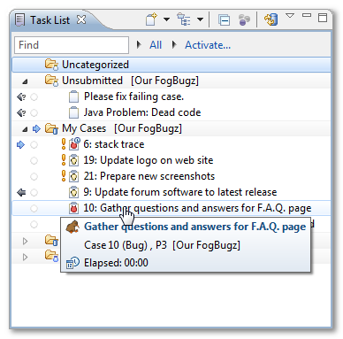
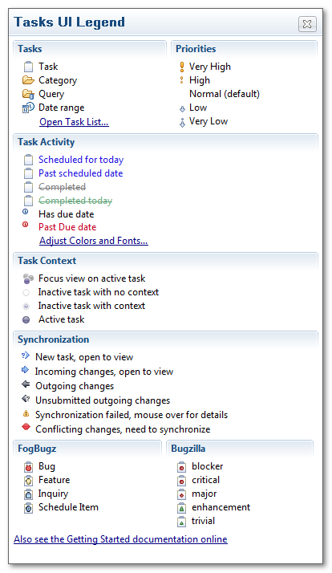

Task List Basics
This section describes basics of Task List view. If you want to learn more about Task List functionality, for example how to create new task, how to schedule tasks for different days, task progress indicators or full discussion about tasks states, please read the Task List documentation from Tasks User Guide.
Term Task is used in Mylyn plug-in and also in Task List view, while term Case is used in FogBugz. Both terms have the same meaning in this user guide.
Cases from your FogBugz repository will be displayed in Task List view. This view has a lot of functionality, but for a quick-start, let’s take a look at two most important concepts: task states, and queries.

Tasks in the list have various states, based on your interaction with them. Unread tasks are tasks with new changes, which you haven’t seen yet. We say that these tasks have incoming changes (coming from repository). When you open and edit the task, it will have local modifications which haven’t been sent to FogBugz repository yet (outgoing changes). Following UI Legend explains meaning of various icons which are displayed in the Task List.

Task List uses Queries to specify which tasks are available in the list. To create new query, open context-menu in Task List (by right-clicking inside the view), and choose New > Query. On the next screen select your FogBugz repository, and press Next.
Foglyn supports queries based on FogBugz filters, or queries based on search options. Since Foglyn 1.7 you can use one of preexisting options to quickly create new query.
Related Topics: